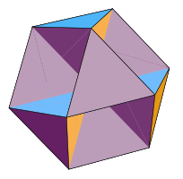
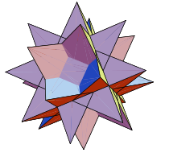

Quasiregular Star Uniform
Text.
-
Versi-Regular Polyhedra
A versi-regular polyhedron is a quasi-regular polyhedron distinguished by having faces that pass through its center. There are nine versi-regular polyhedra, all of which are self-intersecting. Eight of the nine have non-orientable surfaces (like that of a Klein Bottle or the Real Projective Plane). The only one with an orientable surface is the Octahemioctahedron. The Tetrahemihexahedron has an Euler characteristic of 1, making it topologically equivalent to the Real Projective Plane. The remaining eight have even numbered Euler characteristics. All nine were described in 1881 by Albert Badoureau.
-
Self-Intersecting Quasi-Regular Polyhedra

A polyhedron is quasi-regular if it is vertex-transitive and edge-transitive but not face-transitive. In this context, transitivity means that for any two vertices (edges, faces) of the polyhedron, there exists a translation, rotation, and/or reflection that leaves the outward appearance of the polyhedron unchanged yet moves one vertex (edge, face) to the other. This definition implies that a quasi-regular polyhedron must have two kinds of regular faces, where each face of one type is surrounded on all sides by faces of the other type. There are only two quasi-regular polyhedra that are not self-intersecting, namely the Cuboctahedron and the Icosidodecahedron. When self-intersection is allowed, there are 14 other quasi-regular polyhedra. Nine have faces that pass through their centers and are often subcategorized as versi-regular polyhedra. The remaining five are listed on this page.
-
Self-Intersecting Quasi-Regular Duals
The dual of a quasi-regular polyhedron is face-transitive and edge-transitive but not vertex-transitive. In this context, transitivity means that for any two faces (edges, vertices) of the polyhedron, there exists a translation, rotation, and/or reflection that leaves the outward appearance of the polyhedron unchanged yet moves one face (edge, vertex) to the other. This definition implies that a quasi-regular dual must have two kinds of regular vertices, where each vertex of one type is connected along all of its edges to vertices of the other type. There are only two quasi-regular duals that are not self-intersecting, namely the Rhombic Dodecahedron and the Rhombic Triacontahedron. When self-intersection is allowed, there are 14 other quasi-regular duals, but only five of these are finite. The nine versi-regular polyhedra, due to their faces that pass through their centers, produce duals with vertices at infinity.
-
Self-Intersecting Quasi-Quasi-Regular Polyhedra
A polyhedron is quasi-quasi-regular if it is vertex-transitive with trapezoidal vertex figures. Vertex transitivity means that for any two vertices of the polyhedron, there exists a translation, rotation, and/or reflection that leaves the outward appearance of the polyhedron unchanged yet moves one vertex to the other. A vertex figure is the polygon produced by connecting the midpoints of the edges meeting at the vertex in the same order that the edges appear around the vertex. There are only two quasi-quasi-regular polyhedra that are not self-intersecting, namely the Rhombicuboctahedron and the Rhombicosidodecahedron. When self-intersection is allowed, there are 12 other quasi-quasi-regular polyhedra.
-
Self-Intersecting Quasi-Quasi-Regular Duals
The dual of a quasi-quasi-regular polyhedron is face-transitive with faces shaped like kites or darts. Face transitivity means that for any two faces of the polyhedron, there exists a translation, rotation, and/or reflection that leaves the outward appearance of the polyhedron unchanged yet moves one face to the other. There are only two quasi-quasi-regular duals that are not self-intersecting, namely the Deltoidal Icositetrahedron and the Deltoidal Hexecontahedron. When self-intersection is allowed, there are 12 other quasi-quasi-regular duals.
-
Versi-Quasi-Regular Polyhedra
A polyhedron is versi-quasi-regular if it is vertex-transitive with crossed trapezoidal vertex figures. Vertex transitivity means that for any two vertices of the polyhedron, there exists a translation, rotation, and/or reflection that leaves the outward appearance of the polyhedron unchanged yet moves one vertex to the other. A vertex figure is the polygon produced by connecting the midpoints of the edges meeting at the vertex in the same order that the edges appear around the vertex. There are seven versi-quasi-regular polyhedra, all of which are self-intersecting. All seven have non-orientable surfaces (like that of a Klein Bottle or the Real Projective Plane).
-
Versi-Quasi-Regular Duals
The dual of a versi-quasi-regular polyhedron is face-transitive with faces shaped like bowties. Face transitivity means that for any two faces of the polyhedron, there exists a translation, rotation, and/or reflection that leaves the outward appearance of the polyhedron unchanged yet moves one face to the other. There are seven versi-quasi-regular duals, all of which are self-intersecting. All seven have non-orientable surfaces (like that of a Klein Bottle or the Real Projective Plane).
-
Self-Intersecting Truncated Regular Polyhedra
A polyhedron is truncated regular if it is vertex-transitive with isosceles triangular vertex figures. Vertex transitivity means that for any two vertices of the polyhedron, there exists a translation, rotation, and/or reflection that leaves the outward appearance of the polyhedron unchanged yet moves one vertex to the other. A vertex figure is the polygon produced by connecting the midpoints of the edges meeting at the vertex in the same order that the edges appear around the vertex. There are five truncated regular polyhedra that are not self-intersecting, namely the Truncated Tetrahedron, the Truncated Octahedron, the Truncated Cube, the Truncated Icosahedron, and the Truncated Dodecahedron. When self-intersection is allowed, there are five other truncated regular polyhedra.
-
Self-Intersecting Truncated Regular Duals

The dual of a truncated regular polyhedron is face-transitive with faces shaped like isosceles triangles. Face transitivity means that for any two faces of the polyhedron, there exists a translation, rotation, and/or reflection that leaves the outward appearance of the polyhedron unchanged yet moves one face to the other. There are five truncated regular duals that are not self-intersecting, namely the Triakis Tetrahedron, the Tetrakis Hexahedron, the Triakis Octahedron, the Pentakis Dodecahedron, and the Triakis Icosahedron. When self-intersection is allowed, there are five other truncated regular duals.
-
Self-Intersecting Truncated Quasi-Regular Polyhedra
A polyhedron is truncated quasi-regular if it is vertex-transitive with scalene triangular vertex figures. Vertex transitivity means that for any two vertices of the polyhedron, there exists a translation, rotation, and/or reflection that leaves the outward appearance of the polyhedron unchanged yet moves one vertex to the other. A vertex figure is the polygon produced by connecting the midpoints of the edges meeting at the vertex in the same order that the edges appear around the vertex. There are only two truncated quasi-regular polyhedra that are not self-intersecting, namely the Truncated Cuboctahedron and the Truncated Icosidodecahedron. When self-intersection is allowed, there are five other truncated quasi-regular polyhedra.
-
Self-Intersecting Truncated Quasi-Regular Duals
The dual of a truncated quasi-regular polyhedron is face-transitive with faces shaped like scalene triangles. Face transitivity means that for any two faces of the polyhedron, there exists a translation, rotation, and/or reflection that leaves the outward appearance of the polyhedron unchanged yet moves one face to the other. There are only two truncated quasi-regular duals that are convex and not self-intersecting, namely the Disdyakis Dodecahedron and the Disdyakis Triacontahedron. When non-convexity and self-intersection are allowed, there are five other truncated quasi-regular duals. Only one, the Great Disdyakis Dodecahedron, is not self-intersecting.
-
Self-Intersecting Snub Quasi-Regular Polyhedra
A polyhedron is snub quasi-regular if it is vertex-transitive with irregular pentagonal, hexagonal, or octagonal vertex figures. Vertex transitivity means that for any two vertices of the polyhedron, there exists a translation, rotation, and/or reflection that leaves the outward appearance of the polyhedron unchanged yet moves one vertex to the other. A vertex figure is the polygon produced by connecting the midpoints of the edges meeting at the vertex in the same order that the edges appear around the vertex. There are only two snub quasi-regular polyhedra that are not self-intersecting, namely the Snub Cube and the Snub Dodecahedron. When self-intersection is allowed, there are 10 other snub quasi-regular polyhedra.
-
Self-Intersecting Snub Quasi-Regular Duals
The dual of a snub quasi-regular polyhedron is face-transitive with faces shaped like irregular pentagons, hexagons, or octagons. Face transitivity means that for any two faces of the polyhedron, there exists a translation, rotation, and/or reflection that leaves the outward appearance of the polyhedron unchanged yet moves one face to the other. There are only two snub quasi-regular duals that are not self-intersecting, namely the Pentagonal Icositetrahedron and the Pentagonal Hexecontahedron. When self-intersection is allowed, there are 10 other snub quasi-regular duals, but only nine of these are finite. The Great Dirhombicosidodecahedron, due to its faces that pass through its center, produces a dual with vertices at infinity.